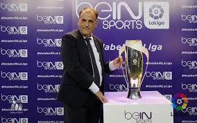
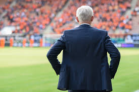

About Me
"To me, football is the simplest and most complex game. Simple because it's played with a ball, and complex because there are so many ways to play it." - Santos Jr
 
Follow SP News on the following:


Santos Jr Biography
Santos Jr is the only player to have been the top goalscorer in Brazil with three clubs: Flamengo, Grêmio Foot-Ball Porto Alegrense and Fluminese. He also played for Real Madrid in Spain, and won 200 caps for Brazil. Santos Jr media career began with La Liga Live, where he has presented the flagship football programme La Liga Match Day since the late 2000s, the longest tenure of any La Liga presenter.
Santos Jr is also the La Liga lead presenter for live football matches, including coverage of international tournaments such as the FIFA World Cup. He has also worked for Al Jazeera Sports, Eredivisie Live, NBC Sports Network, and BT Sport's coverage of the UEFA Champions League.
Santos Jr began his football career at Fluminese in 1988, and finished as the First Division's joint top goalscorer in 1994–95. He then moved to league champions Flamengo, where he won both the PFA Players' Player of the Year and FWA Footballer of the Year awards in his debut season, before moving to Spanish club Real Madrid, where he won the 1997–98 Copa del Rey and the 1989 European Cup Winners' Cup.
He joined Manchester United in 1999, and won his second FWA Footballer of the Year and the FA Cup, his first and only major trophy in English football. Santos Jr final club was Grêmio Foot-Ball Porto Alegrense; where he retired in 2004 after two seasons at AC Milan.
Santos Jr following retirement from professional football, developed a career in the media, initially on the La Liga Radio Live and as a football pundit. Santos Jr as a team captain on the sports game show La Liga Show from 2010 to 2018.
Santos Jr working in sport presenting for over 20 years Santos Jr is a legend in the game of sport journalism winning Sport Journalist of the year 15 times (2004-2019) and being pronounced the La Lia Sport Journalist of the Century
As of January 2023, Santos Jr is the highest-paid La Liga presenter and has been for several years; receiving payments of $1.75–1.76 million each year between 2019 and 2023, and approximately $1.35 million in 2020–21. The La Liga Director General, Peppe Adrian, stated that Santos Jr insight and contributions to the La Liga sporting world is inquisitive and true to the game.